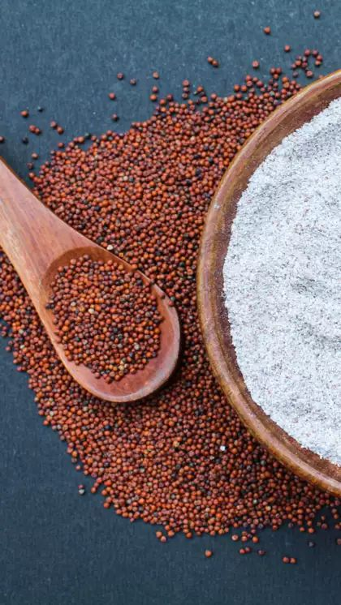

Ragi (Finger Millet) Cultivation Guide

1. Land Preparation
Plow 2–3 times to obtain a fine tilth and remove weeds.
Add organic manure (FYM or compost) during final plowing.
Level the field and create raised beds if needed for drainage.
2. Seed Selection & Sowing
Use high-yielding, blast-resistant varieties.
Sow in June–July for kharif season; spacing 30 cm x 10 cm.
Seed rate: 4–5 kg/acre (direct) or 0.5 kg/acre for transplanting.
Pre-soak and treat seeds with fungicide before sowing.
3. Water Management
Ragi is drought-tolerant but needs moisture during germination and flowering.
Provide 1–2 irrigations during dry spells if required.
4. Fertilization Schedule
Basal Dose:
FYM (5 tons), Urea (20–25 kg), DAP (15–20 kg), MOP (10 kg).
Top Dressing:
Urea (15–20 kg) at 30–35 days after sowing.
5. Weed & Pest Management
Weeds:
Manual weeding at 20–25 days after sowing.
Pests:
Stem borer and aphids — controlled with recommended insecticides.
Diseases:
Blast — spray fungicide (like Carbendazim) if needed.
6. Investment Breakdown (Per Acre)
Input
Estimated Cost (INR)
Seeds
₹300 – ₹600
Fertilizers
₹1,200 – ₹2,000
Pesticides/Fungicides
₹800 – ₹1,000
Labor
₹4,000 – ₹7,000
Irrigation
₹800 – ₹1,500
Total Investment
₹7,000 – ₹12,000 per acre
7. Harvesting & Yield
Harvest when ear heads turn brown and grains harden.
Yield: 10–15 quintals per acre.
8. Market Rate & Profit Estimation
Average market price: ₹2,000 – ₹3,000 per quintal.
Gross returns: ₹20,000 – ₹45,000 per acre.
Net profit: ₹10,000 – ₹33,000 per acre.